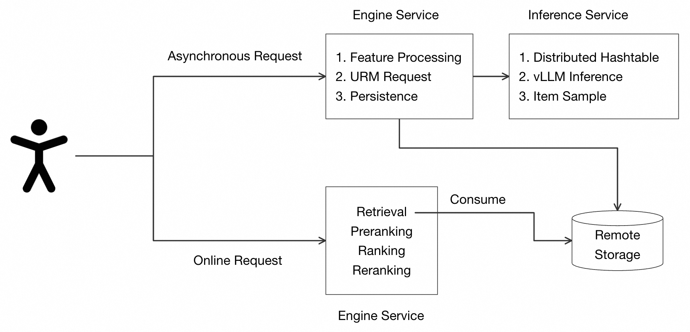
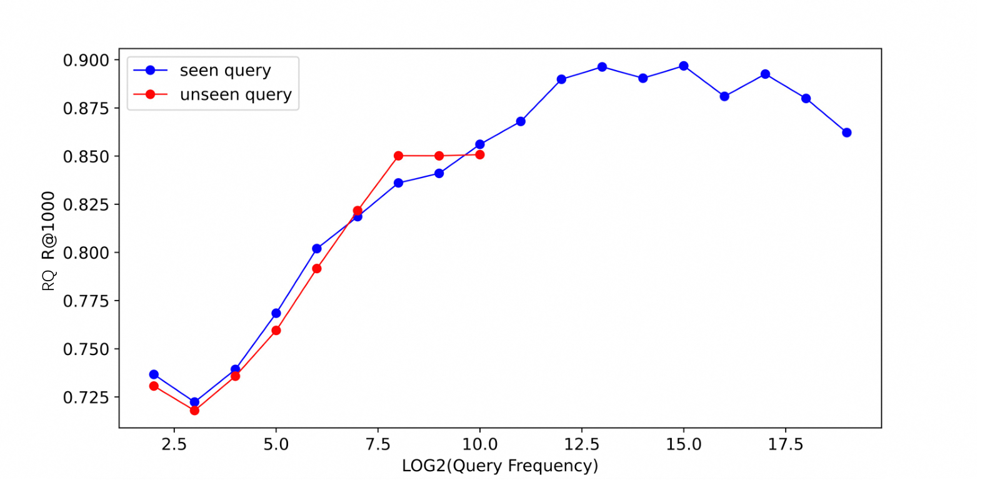

目录 · 11 节
1它到底在解决什么问题？2URM 的整体流程3为什么要 128 个读出位？4千万商品的大表怎么学？5怎么在千万商品里只算一小部分？6实验：一个模型能顶几路专用召回？7换一句目标描述，结果会怎么变？8线上：异步跑、存起来再用9我认为它的局限10一个推荐团队可以怎么试11结论

做推荐召回、手里维护着好几路专用召回模型的团队值得读。阿里淘天这篇 CIKM 论文让一个大模型同时承担点击召回、分场景召回、长尾召回、兴趣探索、带搜索词的召回等多种目标，总体效果还好过工业界常用的多任务召回模型。核心思想一句话：用户历史和这次召回的目标都写成一段输入，大模型一次前向输出几个用户向量，和数千万候选商品各自的向量算内积，取得分高的一组商品；换目标只需要换那句目标描述。论文把它叫 URM（Universal Retrieval Model）。
在工业数据的 9 种召回目标上，URM 的平均 R@1000 是 0.403，最强的多任务基线是 0.363，平均相对提升 11.0%，9 项里 6 项第一。为了让大模型在千万级候选上算得动，作者每次只给几万个商品打分，商品打分这一步的计算量从约 5000 GFLOPs 降到约 2 GFLOPs。在广告平台上线 A/B 中，核心指标广告收入提升 3.01%。真正有用的是一个模型听指令切换召回目标：多路召回不必各训各的，和已学目标相近的新目标改一句描述就能试。作者也承认，和训练目标差得很远的新目标仍要补训练数据。
它到底在解决什么问题？
线上推荐一般是多路召回：一路按点击行为召回，一路按购买召回，一路专找长尾商品，一路给用户推没逛过的新类目，每个场景（首页、详情页等）可能还有自己的一路。每一路都有自己的训练数据和模型结构，单独训练、评估、部署。目标一变，就得再收一份数据、再训一路模型。新目标的样本还常常不够。
设想一位用户（示意），最近收藏了一双跑鞋、买了运动袜、点了几件速干衣。不同目标希望召回的东西不一样：
| 目标（示意） | 希望召回什么 | 传统做法 |
|---|---|---|
| 点击预测召回 | 用户接下来最可能点的跑步装备 | 一路双塔或序列模型 |
| 兴趣探索 | 用户没逛过的新类目，比如骑行装备 | 另一路模型，另一份样本 |
| 长尾召回 | 销量小但相关的小店跑鞋 | 再一路模型 |
| 带搜索词召回 | 搜“防水”时的防水跑鞋 | 三塔模型，单独加一个 query 塔 |
URM 的回答是：这四行用同一个模型，区别只在输入末尾那句目标描述，比如“请召回用户会点击的商品”“请召回新类目的商品”。
URM 的整体流程
| 步骤 | 做什么 | 产出 |
|---|---|---|
| 1. 写输入 | 把用户属性、统计特征、各种行为序列写成一段话，历史商品用商品 ID 直接嵌在句子里；后面接一句目标描述，再接 M 个读出位 | 一条最长 1024 个位置的序列 |
| 2. 大模型前向 | Qwen-7B 全参数微调，只跑一次前向 | M 个读出位各给出一个用户向量 |
| 3. 打分 | 每个用户向量和商品向量做内积，一个商品取 M 个内积里最大的那个当分数 | 商品分数 |
| 4. 采样 | 不给全部千万商品打分，只在几轮采样圈出的几万个商品里算 | 最终 1000 个商品 |
输入里的商品不是文字，而是特殊 token。商品 ID 有几十亿个，放不进大模型的词表，所以作者另建了一张分布式哈希表，按 ID 查出商品向量，再经过一层 MLP 变成和文字 token 一样长的向量。这张输入端的表要覆盖行为序列里十亿级的商品，和后面打分用的千万级候选商品表不是同一张。用户某类行为为空时，这句话直接省掉，序列只截断不补零。这比固定长度的特征输入更省算力，也更不怕特征缺失。
关键分工是：大模型负责“理解这个用户和这次的目标”，一张分解过的商品大表负责“把理解变成千万商品里的分数”，采样负责“只算可能有用的那一小部分”。下面拆开讲。
为什么要 128 个读出位？
生成式召回最直接的做法，是让大模型在最后一个位置输出一个用户向量，再和所有商品比。问题在于一个向量很难同时代表一个用户的几类兴趣：跑鞋和骑行装备在商品空间里可能离得很远，一个向量只能落在中间。
URM 在输入末尾加 M 个固定的占位 token（论文叫 query token），本文叫它“读出位”。每个读出位有自己可学的 embedding，大模型在每个读出位输出一个用户向量，一次前向就得到 M 个。因为是单向注意力，后面的读出位能看到前面读出位的结果，所以不同读出位会学到不同侧面的兴趣。一个商品的分数取它和 M 个用户向量内积中的最大值。作者说试过把这些内积加权求和，取最大值效果更好。
小例子（示意）：两个读出位，一个偏跑步，一个偏骑行。跑鞋和这两个用户向量的内积是 0.9 和 0.1，骑行头盔是 0.2 和 0.8。取最大值后两者分别是 0.9 和 0.8，都能进前排。如果只有一个折中的用户向量，两者可能都只有 0.5 左右，被更“平均”的商品挤掉。
附录的对照说明好处不只来自维度更高。在点击预测召回（CPR）上，32 个读出位、每个 128 维时 R@1000 是 0.248。只用 1 个读出位输出 4096 维、再切成 32 段 128 维向量，总维度一样，却只有 0.163；把商品向量也加到 4096 维，也只有 0.203。正文默认用 128 个读出位，读出位越多效果越好。
千万商品的大表怎么学？
最后一步“用户向量 × 商品表”里，商品表 W 每个商品一列，候选有上千万，直接学参数太多、也太难学。以往的生成式召回用 Semantic ID 把商品编成几层短码来回避这张大表，但那样要多次调用大模型逐层生成。一个 1.5B 的模型在 1024 长度上跑一次就要约 50 毫秒，这已经是作者线上召回的延迟上限，所以 URM 坚持只跑一次前向，改为把大表拆小。
做法是 W = U·Vᵀ。U 是一个小的投影矩阵，把 4096 维的大模型输出压到 128 维；V 是每个商品一个 128 维的向量。商品向量又由两部分相加： Hoot 说

训练里见过的商品
- 区分部分 V_dis
- 每个商品一行可学参数，用双塔 ID embedding 初始化
- 迁移部分 V_trans
- 商品文本经文本 embedding 大模型编码，再经可学线性层压到 128 维
- 商品向量
- 两部分相加
只用区分部分时全部商品 R@1000 是 0.256，相加后是 0.263。
训练里没见过的商品
- 区分部分 V_dis
- 不用：论文写明这类商品按 W = U·V_transᵀ 打分
- 迁移部分 V_trans
- 同一条文本路径照样能算出来
- 商品向量
- 只靠迁移部分
表 3：加上迁移部分，没见过商品上的 R@1000 从只用区分部分的 0.116 提到 0.130。
这篇论文的贡献是让一个大模型听目标描述做召回；这张表拆开的是它为了只跑一次前向而改写的商品表 W = U·Vᵀ。数字是论文 CPR 目标上的消融 R@1000。
出处
论文 §3.2 商品表分解与表 3- 区分部分（V_dis）：每个商品一行独立的可学参数，用双塔模型的 ID embedding 初始化。训练样本多的商品靠它把相似商品分开。
- 迁移部分（V_trans）：把商品的标题、类目、价格、店铺、近 7 天销量和点击率写成一段话，交给一个文本 embedding 大模型编码，再经过一层可学的线性层压到 128 维。训练里没见过的新商品只有这一部分，靠它也能被召回。
消融结果说明两部分各管一头：在 CPR 上，只用区分部分全部商品的 R@1000 是 0.256，没见过的商品是 0.116；只用迁移部分分别是 0.152 和 0.101；两者相加是 0.263 和 0.130。也就是说，区分部分撑起整体效果，迁移部分补上新商品，相加后两项都最好。
训练时也不在全部商品上算 softmax，而是让正样本只和抽样出来的负样本比：每个 batch 按出现频次的 3/4 次方采 10000 个负样本，每个商品的分数同样取 M 个读出位里的最大内积。
怎么在千万商品里只算一小部分？
推理时如果每个用户都和 1000 万个商品算内积，计算量太大。最简单的办法是随机抽一部分商品来算，但用户真正想要的商品很可能根本没被抽到。URM 的做法有点像顺藤摸瓜：先在商品表上建好近邻索引，然后反复执行“打分、按概率抽、扩到近邻”。
算法从一批随机挑出的候选商品出发，之后每一轮做三件事：
- 用同一组用户向量给当前这批商品算概率（温度 0.07）。
- 按概率抽 1000 个商品（不是直接取前 1000，这样排在第 1000 和 1001 名的商品机会更公平）。
- 把这 1000 个商品各自最多 32 个近邻并进来，成为下一轮要打分的这批商品。
这样共做 4 轮，返回最后一轮抽到的 1000 个。
这样做成立的前提是：在商品表里挨得近的商品，对同一用户的得分也相近。每一轮都复用同一组用户向量，不会多跑大模型。
手算一下规模：从第二轮起，每轮最多 1000 ×（32 + 1）= 33000 个商品要打分，而全量是约 1000 万个，也就是说每轮只碰约 0.3% 的商品。
论文把同样的节省换算成了计算量。按它的参数（128 个读出位、4 轮），投影加采样打分约为 128 × 128 ×（4096 + 4 × 1000 × 32）≈ 2.2 × 10⁹ 次运算，也就是约 2 GFLOPs。全量打分约为 128 × 4096 × 10⁷ ≈ 5.2 × 10¹²，约 5000 GFLOPs，所以打分这一步和大模型本身比起来变得很小。
采样轮数的实验说明 4 轮基本够了。作者离线用“采样后的 R@1000 ÷ 全量打分的 R@1000”衡量采样找回了多少：1 轮只有 0.2%，2 轮 2.1%，3 轮 41.7%，4 轮 91.0%，5 轮 91.1%。我的理解是起点随机，前两轮还在往用户的兴趣区域靠，所以几乎找不回东西。
实验：一个模型能顶几路专用召回？
工业数据集来自线上日志，有上亿条样本，候选商品数千万。每个用户一天的行为合在一起当目标集合，用前几天训练、后一天测试。基线是工业界常用的双塔、Transformer 序列模型和 Attention-DNN，每个都有只训一个目标（单任务）和同时训多个目标（多任务）两种版本，表现最好的 Attention-DNN 还加了 Shared Bottom、MMoE、PLE 三种多任务结构。下表摘录 R@1000（场景 B 和购买预测两列略去，URM 在这两项也是第一）：
| 模型 | CPR | 场景 A | 场景 C | 兴趣探索 SR | 长期兴趣 LR | 长尾 LIR | 搜索词 RQ | 9 项平均 |
|---|---|---|---|---|---|---|---|---|
| 双塔 单任务 | 0.129 | 0.271 | 0.129 | 0.069 | 0.066 | 0.117 | 0.355 | 0.161 |
| Attention-DNN 单任务 | 0.253 | 0.477 | 0.260 | 0.106 | 0.213 | 0.251 | 0.651 | 0.323 |
| Attention-DNN 多任务 | 0.238 | 0.456 | 0.277 | 0.062 | 0.336 | 0.265 | 0.671 | 0.351 |
| Attention-DNN Shared Bottom | 0.243 | 0.442 | 0.270 | 0.072 | 0.337 | 0.224 | 0.745 | 0.357 |
| Attention-DNN PLE | 0.256 | 0.451 | 0.274 | 0.062 | 0.327 | 0.224 | 0.761 | 0.363 |
| URM | 0.263 | 0.530 | 0.362 | 0.093 | 0.285 | 0.240 | 0.835 | 0.403 |
这张表说明两件事。第一，传统多任务有跷跷板：Attention-DNN 从单任务换成多任务后，长期兴趣从 0.213 涨到 0.336，兴趣探索却从 0.106 掉到 0.062。第二，URM 没有全面通吃：它在点击、购买、三个场景和带搜索词这 6 项第一，兴趣探索、长期兴趣、长尾三项仍输给最好的基线。带搜索词的召回尤其值得注意：专门加了 query 塔的三塔模型是 0.822，URM 不加任何专门结构做到 0.835，两者相当。
在 4 个公开数据集（Amazon 的 Sports、Beauty、Toys 和 Yelp）上，URM 的 HR@5 和 NDCG@5 平均比最强基线（包括 TIGER 等 Semantic ID 方法）高 46% 和 29%。这些数据集规模小，主要说明方法本身可用，工业表更能说明问题。
换一句目标描述，结果会怎么变？
这部分最能体现“通用召回”的含义：同一个模型，只换输入里那句目标描述。
- 分场景：同一批用户，用“场景 A”的描述召回，场景 A 的 R@1000 是 0.530；用通用点击召回的描述只有 0.440。三个场景的相对提升在 20.5% 到 31.0% 之间。这说明模型确实在读那句话，并按场景调整了输出。
- 兴趣探索：换成“请召回新类目的商品”，结果里新类目商品的占比从 18.8% 升到 46.2%，兴趣探索的 R@1000 从 0.051 升到 0.093。代价是点击召回从 0.263 降到 0.213，说明目标之间确实在取舍，而不是白拿。
- 没训过的组合：训练里只有“带搜索词”和“长尾”两种单独的目标，测试时把两句描述拼在一起。带搜索词召回的 R@1000 是 0.836，和只用带搜索词目标时的 0.835 持平；结果里长尾商品的占比则从 79.6% 升到 82.4%。也就是说，加上长尾要求没有牺牲和搜索词的匹配。
对训练中没见过的搜索词，作者把 query 按自身有多常见（出现频次，图的横轴取 log2）分组画图（上面第二张图）。“见过”指训练数据里出现过这个 query，和它常不常见是两回事：一个不常见的 query 可能恰好没进训练数据。同一频次下，见过和没见过的 query 召回率基本一样。没见过的 query 多半是长尾词，分布也和常见词不同，按频次对齐后再比才公平。
线上：异步跑、存起来再用
7B 模型在 1024 长度上的 P99 延迟是 233 毫秒，不可能放进在线请求里同步跑。作者的办法是把 URM 挪出请求链路（上面第一张图）：用户的点击、购买等行为异步触发一次 URM 推理，10 分钟内的行为合并成一次触发；推理服务查表取商品向量、用 vLLM 做一次 prefill、再跑采样，结果写进远端存储。在线请求来了，召回阶段直接读这份结果。作者说这样做的算力开销能压到和普通模型召回相当。
2025 年 4 月 28 日到 5 月 14 日的线上 A/B 中，广告收入提升 3.01%，CTR 提升 0.78%，CVR 提升 1.24%，长尾商品数量提升 2.23%。作者还提到，因为目标可以用文字直接改，线上可以直接 A/B 不同的目标描述和特征组合来调效果，不用每次重训模型。
我认为它的局限
第一，结果不是实时的。召回结果在用户行为后异步算好再存起来，10 分钟内的行为合并成一次触发，所以在线读到的结果可能落后用户最新的行为几分钟。摘要里说的“延迟控制在几十毫秒”，对默认的 7B 模型并不成立：附录表里它在 1024 长度上的 P99 是 233 毫秒。能上线靠的是异步设计把推理挪出了请求链路，作者也明说这是用时效换算力。
第二，训练成本高。在 64 张 H20 上，Qwen-7B 训 5000 万条样本要 25 小时。为了让每天的数据在 24 小时内训完，作者把训练数据抽样到 5%，只训一轮。对数据量大的团队，这意味着大模型召回每天只能学到一小部分日志。
第三，并非每个目标都更好。9 项里有 3 项输给专用基线，长期兴趣差得最多（0.285 对 0.337）。用指令把兴趣探索调上去，点击召回也会掉约 19%。“一个模型替代多路召回”在汇总指标上成立，但具体某一路换掉之前，要先看那一路自己的指标。
一个推荐团队可以怎么试
- 先选两三个已有专用召回的目标，用一个较小的大模型（比如 1.5B）做 URM 式的统一召回，在离线 R@K 上逐路对比，判断统一模型是否会伤到某一路。
- 读出位数量从 8、32 逐步加到 128，看召回率是否持续上升；同时比较“区分部分 + 迁移部分”和只用 ID embedding 在新商品上的差距。
- 采样轮数从 2 到 5 扫一遍，用“采样后召回 ÷ 全量召回”确认几轮够用，再定线上成本。
- 线上先用异步触发、结果落存储的方式接入一路召回，A/B 不同的目标描述，观察收入、CTR 和长尾占比是否同向。
结论
最关键的启发是：大模型做召回的价值不只在效果，而在于把“召回目标”从模型结构里拿出来，变成一句可以随时改的输入。
| 维度 | 评价 |
|---|---|
| 问题重要性 | 高。多路召回的维护和新目标冷启动是推荐系统的常见负担 |
| 方法创新性 | 中高。读出位、商品表分解、近邻采样都不算全新，但组合起来解决了大模型在千万候选上一次前向出结果的问题 |
| 实验证据 | 较强。有 9 个目标的工业离线对比、各部件消融和线上 A/B，但 9 项里有 3 项输给基线 |
| 工程成本 | 高。7B 模型全参数微调、分布式哈希表、vLLM 推理服务和异步结果存储都要新建 |
| 是否值得尝试 | 值得。已有多路召回、目标经常变化的团队，可以先在离线上用小模型验证统一召回不伤主路 |
读完这篇，你觉得
夜读鸮记下了，谢谢你的反馈。
点一下即可，无需登录；再点一次撤回。只统计匿名次数，不记录你是谁。
讨论
欢迎补充实验细节、复现经验或不同看法。需 GitHub 登录。
正在加载讨论…